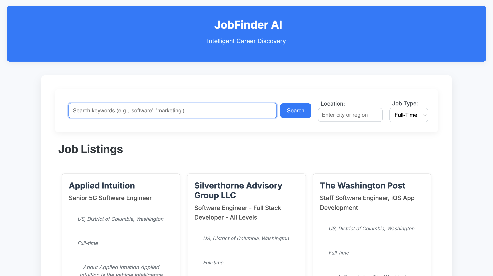
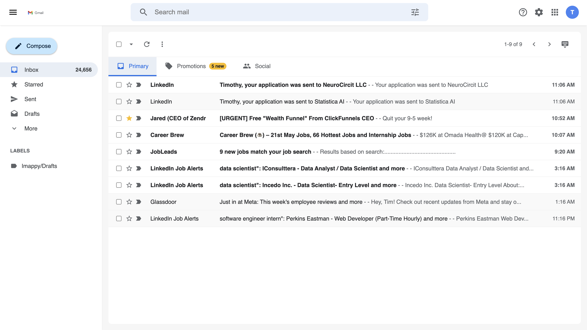

Projects
MyLinkShortener: Smart Links, Powerful Analytics

MyLinkShortener is a modern React.js application for creating and managing short, branded links. It offers intuitive tools for tracking digital connections and boosting brand presence.
Key features include instant URL shortening, custom link branding, and comprehensive analytics on clicks, geography, and referrals. Built with Material-UI, it showcases strong front-end skills in state management, API integration, and responsive design for an effective link management solution.
View Live SiteFreshMetrics Sales Dashboard: Predictive Analytics & Order Planning

The "FreshMetrics Sales Dashboard" is a dynamic and interactive React.js application designed to provide powerful predictive sales analytics and streamline order planning for businesses. Built with Material-UI, it offers a clean, intuitive, and responsive user interface for essential business insights.
Key functionalities include a comprehensive view of predictive and actual sales data, presented through interactive bar and line charts for trend analysis. Users can filter data by product search terms, category, and a flexible date range using integrated date pickers, allowing for focused insights into sales performance. The dashboard also features a sortable raw data table, providing granular details of sales figures and forecast accuracy. Alongside sales analytics, the application includes an "Order Planning" module, enabling users to efficiently add and manage planned product orders with data persistence. This project demonstrates strong front-end development skills, including data visualization with Recharts, state management, prop drilling, and responsive design for a practical business intelligence tool.
View Live SiteCRM System: Lead Management & Reporting Solution
The "CRM System" is a robust and responsive React.js application designed to streamline customer relationship management for sales teams. Built with Google's Material-UI, it offers an intuitive and consistent user experience for managing sales leads effectively. Key functionalities include comprehensive lead management (adding, editing, deleting lead profiles), a dynamic sales pipeline for tracking lead progression, integrated communication logs for notes, and a task management system to keep track of follow-ups. The system features a dashboard for quick insights, advanced data filtering and sorting capabilities, and essential reporting for lead status, source performance, and lead score distribution. Crucially, this CRM now includes data persistence using Local Storage, ensuring that all your lead data, notes, and tasks are saved directly in the browser and persist even after you close and reopen the application. Developed with a modular, component-based architecture, this CRM System is a practical example of building a functional and user-friendly platform for effective sales administration and lead nurturing.
View Live SiteHR Management System: Comprehensive Employee & Payroll Solution
The "HR Management System" is a modern, responsive React.js application designed to streamline human resources operations. Built with Google's Material-UI, it provides an intuitive and consistent user experience across various modules. Key functionalities include robust employee management (adding, editing, deleting employee profiles), efficient payroll processing (tracking gross/net pay, deductions, and status), and a comprehensive onboarding module to manage new hire processes and tasks. The system features dynamic data display with sorting, pagination, and search capabilities, ensuring easy navigation and data retrieval. Seamless navigation between modules like Dashboard, Employees, Payroll, Leave Management, Performance, and Onboarding is powered by React Router, ensuring a smooth and productive user journey. Developed with a modular, component-based architecture, this HR Management System stands as a prime example of building a professional, functional, and user-friendly platform for effective HR administration.
View Live SiteProject Management App: Streamlining Team Collaboration

The "Project Management App" is a robust and responsive multi-page React.js application designed to enhance team collaboration and streamline project workflows. Meticulously developed with a strong focus on intuitive user experience, it leverages Google's Material-UI for a modern, consistent, and highly interactive interface across all devices. Key functionalities include comprehensive task management (creation, tracking, completion), efficient file sharing with project-specific organization, and a real-time chat system for seamless communication. The application features dynamic reporting capabilities, integrating **Recharts** for clear and insightful data visualizations on task statuses, project distribution, file types, and team member assignments. Seamless navigation between modules like Dashboard, Projects, Tasks, Files, Chat, Reports, Notifications, and Settings is powered by React Router, ensuring a smooth user journey. Built with a modular, component-based architecture, this Project Management App stands as a prime example of creating a professional, functional, and user-friendly digital workspace for efficient project execution and team coordination.
View Live SiteZeroCrate: Transforming Fresh Grocery Retail
The "ZeroCrate Website" is a comprehensive, responsive multi-page React.js application meticulously crafted to showcase ZeroCrate's innovative solutions for fresh grocery retailers. This project demonstrates robust front-end development, utilizing Google's Material-UI for a modern, consistent, and intuitive user interface across all devices. Key features include dedicated sections detailing ZeroCrate's core solutions (AI-powered Fresh Food Forecasting, Waste Reduction, Supply Chain Optimization) and specialized products (ZeroCrate Core, Analytics Dashboard). The site integrates data visualization with **Chart.js** to provide clear, interactive insights into the Analytics Dashboard's capabilities, transforming complex data into actionable understanding. Seamless navigation is provided via React Router, connecting various informative pages including a detailed blog section, a "How It Works" guide, and a "Request a Demo" form. Built with a strong component-based architecture, this website serves as a prime example of creating a professional, informative, and user-friendly digital presence for a B2B SaaS product in the retail technology space.
View Live SiteAxiom Dashboard: Cloud Communication Management Interface
The "Axiom Dashboard" is a robust and interactive React.js single-page application designed as an administrative interface for managing cloud communication services. This project showcases strong front-end development skills, featuring a dynamic and responsive layout with a persistent sidebar navigation system, complete with Font Awesome icons and a state-managed active selection. Key functionalities include modular content sections for Users, Devices, Numbers, Billing, Reports, Sites, and Advanced Services, each designed for intuitive management. Interactive elements such as search filters, add/edit/delete operations, and dedicated modal forms for data entry (e.g., adding new users, devices, or sites) provide a comprehensive user experience. Crucially, the application integrates a global notification system to provide immediate feedback on user actions (success, error, info), simulating real-world data interactions with temporary states. This project demonstrates proficiency in React's component-based architecture, state management with `useState`, prop drilling for data flow, and responsive CSS styling to deliver a clean, functional, and user-friendly administrative portal.
View ProjectAtheniq AI: Personalized Marketing Platform

"Atheniq AI: Personalized Marketing Platform Landing Page" is a sophisticated and responsive React.js web application built to elegantly showcase advanced AI-driven marketing solutions. This project exemplifies strong front-end development, integrating a comprehensive suite of Material-UI components for a polished design system, complemented by custom theming. Key features include a dynamic Hero Section, in-depth sections detailing AI-powered data journeys, streamlined campaign creation, compelling case studies with real results, and an extensive resource hub. Crucially, the application incorporates smooth, scroll-triggered reveal animations using `react-intersection-observer`, enhancing user engagement and providing a modern Browse experience. Interactive elements like custom forms, image carousels, video embeds, and subtle hover effects are meticulously implemented to create a highly user-friendly and visually appealing interface. This project demonstrates robust skills in building complex, interactive, and performant web applications with a focus on delivering engaging UI/UX.
View ProjectSwiftPay Landing Page

"SwiftPay Landing Page" is a responsive React.js web application designed to showcase a modern financial service with a clean, intuitive user interface. Its development involved implementing key UI/UX elements such as responsive navigation with dropdown menus for desktop, a mobile hamburger menu with a sliding drawer, and interactive hover effects on feature cards. The project successfully integrated Material-UI components for a consistent design system and utilized pure CSS animations for smooth visual transitions. This application demonstrates strong front-end development skills, focusing on creating engaging and user-friendly web experiences.
View ProjectInsurify Pro

"Insurify Pro" is a React.js web application designed to streamline the process of obtaining and managing insurance-related information and quotes. Its development involved successfully navigating complex Git version control issues, including challenges with nested repositories and ensuring accurate remote synchronization. A robust continuous deployment pipeline was established using Vercel, ensuring the application is efficiently published and accessible online. This project demonstrates strong debugging and problem-solving abilities to overcome various technical hurdles during the development and deployment phases.
View ProjectVoyageNow: Your Seamless Ride-Sharing Experience

VoyageNow is a modern and intuitive ride-sharing application crafted with HTML, CSS, and JavaScript. This project leverages the **Google Maps API** for interactive map integration and precise route visualization, showcasing a complete user journey from ride request to destination. It provides real-time fare estimates and multiple vehicle options. Key features include transparent pricing for Standard, XL, and Lux rides, and a clean, user-friendly interface designed for effortless booking. It demonstrates robust functionality for handling diverse routes, such as trips from Mount Vernon to New York City.
View ProjectEmployee Tracking System
Developed with HTML, CSS, and JavaScript, this Employee Tracking System provides a straightforward solution for managing personnel data. It allows users to efficiently add, view, and organize employee records, streamlining administrative tasks. Key features include a clear and intuitive interface for data entry and display, making it easy to maintain an organized database of employees within an organization.
View ProjectJobFinder AI
Developed with HTML, CSS, and JavaScript, this project is a smart job discovery platform. It allows users to search for job openings using keywords and location, leveraging the JSearch API to fetch real-time job listings. Key features include a clean and modern user interface, the ability to save jobs for later viewing, and a simulated AI chat assistant to provide helpful suggestions based on user input.
View ProjectNYC Benefits Resources
Your central hub for finding support programs in New York City. Explore resources for Food Assistance, Housing, Healthcare, Childcare & Education, Financial Assistance, and Employment Support. Stay informed about important announcements such as the Emergency Rental Assistance Program (ERAP) reopening for new applications until May 15, 2025, and the Summer EBT for Children program with applications being accepted until June 30, 2025.
View ProjectGmail Clone
Developed as a front-end exercise using HTML, CSS, and JavaScript, this project replicates key visual and interactive features of the Gmail interface. It showcases a responsive layout, dynamic email listing, the ability to compose and send simulated emails, mark emails as read/unread or starred, and a collapsible sidebar. This project emphasizes meticulous attention to detail in UI/UX recreation.
View ProjectDaily Hacks
Explore a variety of daily hacks across different categories, including Tech, General, Productivity, and Home. Discover tips to Get Started with unlocking hidden iPhone features and mastering essential shortcuts. Boost Your Productivity with the Pomodoro Technique, automate repetitive computer tasks, and learn effective note-taking strategies. Find Home Hacks like a quick tip for a cleaner microwave, a DIY coffee stain remover, and space-saving organization ideas for small apartments. Stay informed with Tech Tips such as troubleshooting common Wi-Fi issues and General Tips like simple exercises for better posture. You can also save your favorite tips for later access.
View ProjectInnovate & Elevate Careers - Job Application Form

This project focuses on creating a user-friendly and accessible online job application form for Innovate & Elevate Careers. Recognizing the importance of a smooth and efficient application process, this form is designed with clear navigation, real-time validation, and responsiveness across various devices. It guides candidates through stages such as resume upload, contact information, application-specific questions, voluntary disclosures, and a final review before submission. Key features include interactive elements, accessibility enhancements for users with disabilities, and a modern, clean design inspired by Material UI principles.
View ProjectJoinUp

JoinUp is designed to bring your various groups together in one easy-to-manage platform. Recognizing the need for seamless communication across different communities and circles of life, JoinUp offers intuitive tools for creating group chats, inviting members via multiple methods (link, QR code, SMS), and fostering connection without the need to share personal phone numbers (up to 10k members per group). Stay easily connected with features like polls, GIFs, event scheduling, and more, all within a user-friendly interface.
View ProjectClarityChoice

ClarityChoice was founded on the principle that selecting the ideal subscription plan should be straightforward and stress-free. Driven by the frustration of navigating complex choices, our team of experts developed a platform designed to provide clarity and empower users to make informed decisions. By understanding your unique preferences, we deliver personalized recommendations, guaranteeing you receive the best possible value and satisfaction.
View ProjectSales Engagement App
Developed with HTML, CSS, and JavaScript, this landing page showcases a comprehensive sales engagement application. It highlights key features such as intelligent email sequencing, CRM integration, detailed analytics, advanced personalization, and real-time email tracking, designed to empower sales teams and drive meaningful outreach.
View ProjectTrainTimeApp

Built using HTML, CSS, and JavaScript, this app provides real-time train schedules for Metro-North commuters. It allows users to view upcoming train times, destinations, and line information, ensuring smooth and efficient trip planning for daily travelers.
View ProjectMediForm
Designed with HTML, CSS, and JavaScript, this patient intake form provides a user-friendly experience with seamless data submission, real-time validation, and HIPAA-compliant security features, ensuring a smooth and efficient process for collecting patient information.
View ProjectTropical Villa

Developed with HTML, CSS, and JavaScript, this Tropical Villa project showcases a beautiful, responsive design that provides an immersive experience with stunning visuals and smooth interactivity.
View ProjectQuick Cart
Crafted using HTML, CSS, and JavaScript, this e-commerce storefront offers a seamless, user-friendly shopping experience with product filtering, a dynamic shopping cart, and a smooth checkout flow.
View ProjectBiotech

Built with HTML, CSS, and JavaScript, this Biotech Project features a clean, professional design with intuitive navigation, highlighting cutting-edge technologies and delivering a seamless user experience.
View ProjectAcademix Online Learning
Designed with HTML, CSS, and JavaScript, the Academix Online Learning Project offers a modern, interactive platform for students, featuring easy navigation, course filtering, and a smooth, engaging user experience.
View ProjectMedicine Delivery App

Built with React, Node.js, and Express, delivering an unparalleled experience.
View ProjectThe HappyTooth

A sleek, modern dental clinic website built with HTML, CSS, and JavaScript. This responsive website showcases the clinic's services, features, and provides easy navigation for potential patients.
View ProjectHomeRush

A responsive real estate landing page designed to provide a seamless user experience for individuals looking to buy, sell, or rent properties.
View ProjectHopeConnect

A community-driven platform offering free educational resources and job readiness materials.
View ProjectRecycling Made Easy
A user-friendly, informative webpage designed to promote awareness about recycling and sustainability, encouraging environmentally responsible behavior.
View ProjectTenant-Landlord Hub

Web application simplifying communication and management between tenants and landlords.
View ProjectFinance Dashboard

A MERN Finance Dashboard App using Redux-Toolkit and TypeScript with Vite, styled with MUI, and visualized using Recharts. The backend includes Node.js, Express, and MongoDB.
View ProjectHR Dashboard - MySQL & PowerBI
An analysis of HR data from 2000 to 2020 using MySQL Workbench and PowerBI, covering employee demographics, job roles, turnover rates, and workforce distribution.
View ProjectReact Admin Dashboard

A React-based Admin Dashboard with a component-based architecture and CSS styling for a responsive UI, designed for efficient data management.
View ProjectXVII Art Gallery

An interactive digital art showcase developed with HTML, CSS, and JavaScript, showcasing front-end development skills.
View ProjectSQL Project Data Analysis
Data analysis of job postings from 2024, using PostgreSQL to uncover insights for job seekers in data science and data analysis.
View ProjectStudyBuddy Discord Learning Website
A web application built with Python, Django, and SQL, allowing users to create chat rooms for collaborative learning, inspired by Twitter and learning forums.
View ProjectSocial Media App
An SQL and Django-powered social media app with user registration, login, and a robust data model for managing posts and user interactions.
View ProjectSafeCoin Vault

A secure vault application built with HTML, CSS, and JavaScript, featuring a user-friendly sign-up experience and privacy policies.
View Project